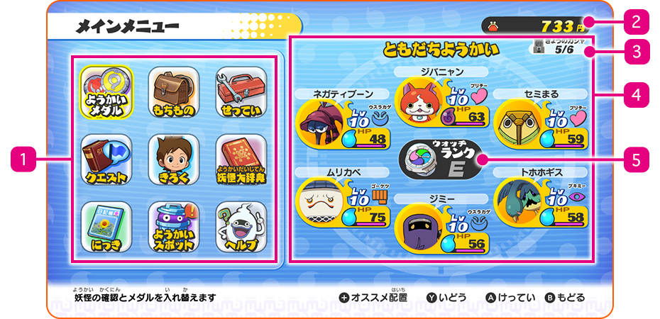
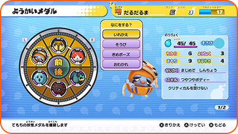
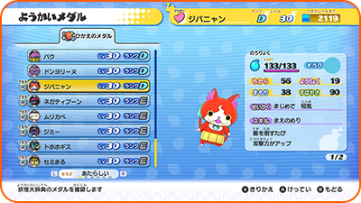
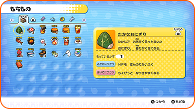

Menú principal
Pulsa Ⓧ durante la partida para abrir el menú principal.
Pantalla del menú principal

- 1Menú
- 2Dinero
- 3Tiradas de hoy
-
Muestra el número de tiradas de la expendekai restantes que puedes hacer hoy / número máximo de tiradas que puedes hacer hoy.
- 4Amigos Yo-kai
-
Estos son los Yo-kai que se encuentran en tu rueda Yo-kai
- 5Rango del Yo-kai Watch
-
¡Tu rango del Yo-kai Watch aumentará al completar ciertas misiones; entonces, podrás abrir más relojes cerrados y encontrar Yo-kai de rango mayor utilizando tu radar Yo-kai!
Menú: Medallas Yo-kai
Aquí puedes consultar el estado de tus amigos Yo-kai o elegir a los que quieres que combatan junto a ti.
※ Solo puedes cambiar los miembros de tu equipo hablando con Ignóculo o mediante el Medálium Yo-kai en el dormitorio del personaje principal.
En uso
Aquí puedes cambiar la formación y el equipamiento de los Yo-kai que se encuentren en tu rueda Yo-kai.
※ Mientras mantengas pulsado L o R, el círculo girará y podrás intercambiar tus amigos Yo-kai de la parte superior e inferior en tu rueda Yo-kai.

| Cambiar | Aquí puedes cambiar a los Yo-kai en uso por otros que hayas conseguido. |
|---|---|
| Poner objeto | Aquí puedes equipar a los Yo-kai con objetos. Cada Yo-kai se puede equipar con un único objeto. |
| Cambiar pose | Aquí puedes elegir la pose de victoria de tus Yo-kai. |
| Liberar | Aquí puedes dejar libre a uno de tus Yo-kai, pero ¡recuerda que es una decisión irreversible! |
Coleccionadas
Esencialmente, este menú es igual al menú En uso. La diferencia radica en que aquí puedes seleccionar "Insertar" para incluir a un Yo-kai en la rueda Yo-kai.

Grupo automático
Cuando hables con Ignóculo, pulsa el botón + para crear automáticamente un equipo de combate con tus amigos Yo-kai. Selecciona "Grupo automático" repetidas veces para obtener diferentes alineaciones, como por ejemplo aquellas que favorecen a los Yo-kai con niveles mayores o a los orientados a la defensa.
Menú: Inventario
Aquí puedes consultar y utilizar los objetos que poseas actualmente.

Tipos de objetos
| Comida | Dales comida a tus amigos Yo-kai para restaurar sus PV o su animámetro. Dásela a tus enemigos durante un combate para aumentar la probabilidad de que quieran ser tus amigos cuando este haya finalizado. |
|---|---|
| Objetos | Aquí se encuentran todos los insectos y peces que has capturado hasta la fecha. Puedes venderlos o intercambiarlos por objetos en Caza y Sedal. |
| Animales | Se pueden utilizar objetos para reanimar a Yo-kai o cambiar su carácter. Algunos pueden utilizarse en la fusión. |
| Equipamiento | Estos son los objetos con los que puedes equipar a tus Yo-kai. |
| Objetos clave | Se trata de objetos importantes que recibirás al completar misiones o a lo largo de la historia principal. |
Menu: Opciones
Aquí puedes cambiar la configuración del juego.
| Música | Aquí puedes cambiar el volumen de la música. |
|---|---|
| Efectos | Aquí puedes cambiar el volumen de los efectos de sonido. |
| Mostrar reloj | Si seleccionas "Fijo" en esta opción, el reloj se mostrará en todo momento. |
| Objetivo | Si seleccionas "Fijo" en esta opción, tu objetivo se mostrará en todo momento. |
| Indicador | Aquí puedes activar o desactivar la flecha que señala hacia tu objetivo. |
| Rotación de la cámara | Aquí pudes elegir entre tener los controles de cámara normales e invertidos. |
Menú: Misiones
Aquí puedes consultar los detalles de las misiones en las que participes. Pulsa Ⓧ para abrir el mapa en la pantalla superior y ver adónde debes ir para completar la misión.
Petición
Se trata de peticiones de la gente de la ciudad. Puedes aceptar tantas como desees.
Tarea
Se trata de tareas más pequeñas. Puedes aceptar un máximo de cinco al mismo tiempo.
Historia
Son las misiones de la historia principal.
Menú: Récords
Aquí puedes ver diferentes tipos de información:
| Récords de (nombre del jugador) | Permite consultar tus registros de juego. |
|---|---|
| Tus récords de Yo-kai | Permite consultar el progreso del Medálium de Yo-kai y tus Yo-kai favoritos. |
| Registro de batallas | Permite consultar tus registros de combates contra otros jugadores. |
Menú: Medálium de Yo-kai
Puedes ver información acerca de los Yo-kai y verlos más de cerca.
Yo-kai Legendarios
Cuando reúnas todas las medallas de una página Legendaria del Medálium de Yo-kai, aparecerá un Yo-kai Legendario, que se volverá tu amigo.
Menú: Diario
Aquí puedes guardar tu progreso.
Menú: Zonas Yo-kai
Consulta información acerca de las zonas donde se rumorea que hay Yo-kai.
Menú: Ayuda
Consulta los controles y consejos acerca de cómo jugar.